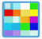

☰
🔍 Featured
🏠 Life
🔒 Crypto
📝 Encode/Decode
💻 Developer
🔐 Base64
🖼️ Image
🎮 Fun
English
中文
Image Tools
Favicon Generator
Safe favicon conversion tool
Image Color Picker
Pick colors from images
Screen Color Picker
Pick any on-screen color
Image Format Converter
Convert between image formats
Color Picker
Select colors online
Color to Grayscale
Convert images to grayscale
Base64 to Image
Convert Base64 to image
Image to Base64
Convert image to Base64
Image Compressor
Compress images online
Image to Excel
Convert images to Excel

Image Mosaic Tool
Apply mosaic to images
Image Watermark Tool
Add watermarks to images
Icon Converter
Convert images to .ico icons
Image Cropper
Crop images online
Nine-grid Cutter
Split images into 3x3 grid
Text to Image
Generate images from text
Image Stitching Tool
Stitch images together
Rounded Corners
Apply rounded corners to images
Add Text to Image
Overlay text on images
Placeholder image generation
Placeholder image generation
Generate maze images online
Generate maze images online